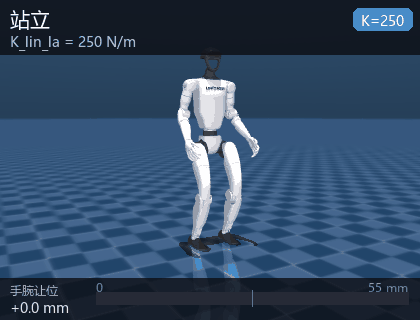
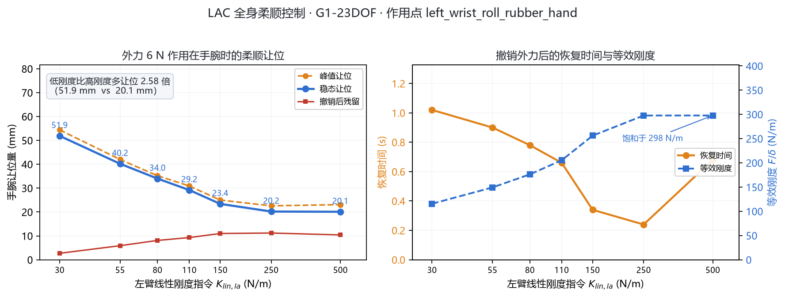

人形机器人全身柔顺控制（humanoid_g1_compliance）
用 LAC（Linear and Angular Compliance）策略驱动 Unitree G1（23 自由度） 在 MuJoCo 中 站立，并在外力作用下按指令刚度柔顺让位：刚度指令越低，手臂让位越大、恢复越慢， 而身体始终不倒。策略以 50 Hz 推理，纯 CPU、无头运行，不需要训练、不需要 GPU、 不需要手柄。

一、项目概述
| 项 | 内容 |
|---|---|
| 机器人 | Unitree G1，23 自由度（12 腿 + 1 腰 + 10 臂） |
| 物理引擎 | MuJoCo 3.1+（椭圆摩擦锥、impratio=30） |
| 学习方法 | LAC（教师-学生 + 历史编码器），Isaac Gym 训练，PyTorch checkpoint |
| 策略结构 | adapt_module(6080→64) + student_actor(1014→512→256→128→23) |
| ROS | ROS 2 Humble |
| 控制频率 | 50 Hz（每周期 4 个 5 ms 物理步） |
| 入口 | main.py（--demo / --bench / --list / --ros） |
| 权重 | weights/lac_g1_23dof.pt（48.8 MB），随仓库提供 |
复现对象是论文 LAC: Linear and Angular Compliance for Humanoid Whole-body Control （Liu, Gu, Zhu, Hayashibe, 2026, arXiv:2608.25405） 的官方部署代码 lac-code。
任务定位：课程任务「物理仿真 + 运动控制 + 人机共融」。与仓库里其他模块不同， 本模块控制的不是「走到哪」，而是「被推时让多少」——这是人机协作里最基础的安全能力。
二、与同类模块的区别
| 模块 | 机器人 | 控制目标 | 外力响应 |
|---|---|---|---|
| humanoid_ppo_locomotion | G1 | 站立平衡（解析基元 + PPO 残差） | 无 |
| humanoid_keyboard_control | G1 | 关节级键盘控制 | 无（纯位置控制，很硬） |
| humanoid_push_recovery | 自建双足 | ZMP / 捕获点恢复 | 摔倒前救回来，刚体式抵抗 |
| humanoid_h1_walk | H1 / H1_2 | 速度指令跟踪（端到端 PPO） | 无抗扰训练 |
| humanoid_g1_compliance（本模块） | G1 23DOF | 按指令刚度柔顺让位 | 主动让步，让位量可调 |
关键差别是「刚度是指令，不是增益」：其他模块的 PD 增益写死在配置里，本模块把 5 个刚度值作为观测输入喂给策略，由策略自己决定怎么发力。所以调刚度不是改控制器 参数，而是给策略下了一条「现在该多软」的语义指令。
三、项目目录结构
humanoid_g1_compliance/
├── main.py 统一入口（--demo/--bench/--list/--ros）
├── humanoid_g1_compliance/
│ ├── sim_core.py 纯 MuJoCo 闭环（无 DDS、无中间件）
│ ├── policy.py LAC 推理封装 + 启动状态机 + Command
│ ├── compliance.py 外力实验：Perturbation / Runner / Metrics
│ ├── sim_node.py ROS 2 仿真节点（50 Hz）
│ ├── stiffness_node.py 终端实时调刚度
│ ├── demo.py 离线演示
│ └── lac/ vendored 推理模块（9 个，MIT）
├── assets/g1/ G1 23DOF 模型 + 29 个 STL（19 MB）
├── weights/ lac_g1_23dof.pt（48.8 MB，体积换免联网）
├── motions/ 动作库 npz（7 KB，savez_compressed）
├── config/ compliance.yaml + lac_policy_cfg.yaml
├── scripts/
│ ├── smoke_compliance.py 无头自检（6 项）
│ ├── bench_compliance.py 刚度扫描（7 档）
│ ├── plot_compliance.py 指标图
│ └── record_gif.py 离屏渲染录动图
├── launch/main.launch.py 一键启动
└── test/test_offline.py 17 项离线测试
关于 48.8 MB 的权重：这是本仓库最大的单文件（次大是 docs/img/ground/rviz.gif
的 16 MB），仍在 GitHub 50 MiB 提示线以内，入库是为了让评测机断网也能直接复现。
与 #1167（Whisper 权重改为运行时下载）不同：Whisper 有 whisper.load_model() 的自动
下载机制，这份策略权重只能从上游 lac-code 仓库手工取，没有可依赖的自动下载路径。
校验：
a54a213637ebbc55ea20a11373b00a4ed7dbef06a4b7c20804009dd2819f4a9c weights/lac_g1_23dof.pt
四、核心实现
4.1 闭环结构
每个控制周期 20 ms：读一次本体状态 → 拼观测 → 策略推理 → PD → 4 个 5 ms 物理步。
q, q̇, 四元数, 陀螺 ──► 观测(950 + 6080) ──► adapt + student ──► a(23)
▲ │
│ ▼
└──── MuJoCo 物理 ◄──── PD 力矩 ◄──── q* = α·a + q_default
4 步 × 5 ms
上游走的是「MuJoCo 进程 → DDS → 部署进程」两进程结构，本模块压成单进程：
策略直接写 data.ctrl，观测直接从 sensordata 读。好处是评测机上不用装
unitree_sdk2py、不用网卡配置、也不会有 DDS 抖动；代价是不能再接真机。
4.2 观测（950 维 actor / 6080 维 adapter）
每帧 95 维，按「项优先、旧帧在前」拼接：
| 项 | 每帧维数 | 内容 |
|---|---|---|
base_ang_vel |
3 | 机身角速度（机体系） |
projected_gravity |
3 | 机体系下的重力方向 |
command_lin_vel |
2 | 线速度指令 $[v_x, v_y]$ |
command_ang_vel |
1 | 偏航角速度指令 $\omega_z$ |
command_waist_yaw |
1 | 腰偏航指令 |
command_base_height |
1 | 骨盆目标高度（0.56~0.78 m） |
ref_upper_dof_pos |
10 | 上肢参考关节角 |
joint_pos_rel |
23 | 关节角相对默认站姿的偏差 |
joint_vel_rel |
23 | 关节角速度 |
last_action |
23 | 上一帧动作 |
stiffness |
5 | 刚度指令（取 log） |
| 合计 | 95 |
两组观测的时间深度不同：
其中 $\mathbf{f}_t \in \mathbb{R}^{95}$ 是第 $t$ 帧的 95 维。actor 只看最近 0.2 s（10 帧）， adapter 看最近 1.28 s（64 帧）——长历史用来估计「现在被多大力推着」这类隐变量。
刚度进网络前必须取对数，这是训练时的约定：
漏掉这一步（直接喂原值）会导致训练/部署不一致，表现为让位量完全不对——这是 复现这类策略最容易踩的坑。
4.3 策略网络
部署只走学生路径：历史编码器把 6080 维压成 64 维隐变量，与 950 维观测拼接后过 三层 MLP：
$\mathbf{z}_t$ 相当于对「外部接触状态」的在线估计：同样的关节角和角速度，
被 6 N 推着和被 0 N 推着在 64 帧历史里留下的痕迹不同，$\mathbf{z}$ 就不同，
策略据此决定该硬扛还是该让。教师网络、critic、特权观测归一化器都还在 checkpoint 里，
但不在部署计算路径上（strict=True 加载需要它们的形状）。
4.4 刚度指令与柔顺性
动作缩放成关节目标角，PD 把偏差变成力矩：
注意：$K_p$ 是固定的训练刚度，不随刚度指令变化。刚度指令 $\mathbf{k}$ 只进观测， 策略通过「改 $\mathbf{q}^\star$ 让多少」来体现柔顺。末端等效刚度用稳态让位定义：
$F$ 是外力、$\delta$ 是末端位移。指令 $K_{lin,la}=30$ 时实测 $K_{\text{eff}} = 116$ N/m， 指令 250 时 298 N/m——策略把「指令刚度」映射成了「末端实际刚度」，但不是线性的， 高刚度区会饱和（见第六节）。
4.5 启动状态机
上游用「弹性吊带 + 手柄按键逐级推进」启动，本模块直接从训练站姿满刚度进入 POLICY：
| 阶段 | 上游做法 | 本模块 |
|---|---|---|
| IDLE → NEUTRAL | 按键 A，3 s 过渡到默认站姿 | 跳过 |
| NEUTRAL → HANDOFF | 按键 A，3 s 混入策略输出 | 跳过 |
| HANDOFF → RAMP_UP | 按键 A，3 s 升 $K_p$ | 跳过 |
| RAMP_UP → POLICY | 自动 | 直接进入 |
为什么不需要吊带：上游从「零力矩瘫软」状态启动，$K_p=35$ 撑不住 34 kg 自重 （需 335 N，而 35 N·m 量级的力矩不够），所以必须吊带托住。本模块从训练时的 default pose 起步——它本来就在策略的训练分布内，满刚度直接接管即可。
实测软启动（吊带 + 分级升 $K_p$）反而更差：弹簧式吊带会把机器人拉离地面
（9 s 时骨盆 0.921 m），策略看到「悬空」状态后开始漂移，最终失稳。
StartupFSM(direct=False) 的完整状态机仍保留在代码里，供需要时对照。
五、编译与启动
# 1) 依赖（torch 用 CPU 版即可）
pip install torch --index-url https://download.pytorch.org/whl/cpu
pip install mujoco pyyaml
# 2) 构建
cd ~/ros2_ws
colcon build --packages-select humanoid_g1_compliance
source install/setup.bash
# 3) 一键启动（仿真 + 调刚度终端）
ros2 launch humanoid_g1_compliance main.launch.py
ros2 launch humanoid_g1_compliance main.launch.py stiffness:="[55,250,250,55,55]"
ros2 launch humanoid_g1_compliance main.launch.py teleop:=false
运行中改刚度、施加外力：
# 左臂刚度降到 30 N/m
ros2 topic pub --once /humanoid/stiffness_cmd std_msgs/Float32MultiArray \
"{data: [30.0, 250.0, 250.0, 55.0, 55.0]}"
# 左腕受 6 N 侧向力 2 s
ros2 topic pub --once /humanoid/external_force std_msgs/Float64MultiArray \
"{data: [0.0, 6.0, 0.0, 2.0]}"
ros2 topic echo /humanoid/status # 骨盆位姿、pg_z、是否摔倒
不开 ROS 时的离线演示（Windows 也可）：
python main.py --demo # 站立 + 一次手腕扰动，打印指标
python main.py --demo --k-la 30 # 低刚度
python main.py --bench # 刚度扫描 7 档
python main.py --list # 列出刚度通道与范围
六、实验结果
6.1 刚度扫描
6 N 侧向力作用在左腕 2 s，每档独立复位重跑（scripts/bench_compliance.py）：
| $K_{lin,la}$ | 峰值让位 | 稳态让位 | 撤销残留 | 恢复时间 | 等效刚度 | 躯干偏移 |
|---|---|---|---|---|---|---|
| 30 | 54.4 mm | 51.9 mm | 2.7 mm | 1.02 s | 116 N/m | 26.7 mm |
| 55 | 42.0 mm | 40.2 mm | 5.9 mm | 0.90 s | 149 N/m | 23.4 mm |
| 80 | 35.2 mm | 34.0 mm | 8.1 mm | 0.78 s | 176 N/m | 20.1 mm |
| 110 | 30.9 mm | 29.2 mm | 9.3 mm | 0.66 s | 205 N/m | 18.0 mm |
| 150 | 25.0 mm | 23.4 mm | 11.0 mm | 0.34 s | 256 N/m | 12.7 mm |
| 250 | 22.6 mm | 20.2 mm | 11.2 mm | 0.24 s | 298 N/m | 11.6 mm |
| 500 | 23.1 mm | 20.1 mm | 10.4 mm | 0.68 s | 298 N/m | 12.8 mm |

6.2 三点结论
- 让位随刚度单调递减，低刚度（30）比高刚度（500）多让位 2.58 倍，全程不摔倒。 这说明刚度指令确实被策略理解并执行了，不是噪声。
- 等效刚度在 150 以上饱和（≈298 N/m）。再调高指令，末端实际刚度不再变硬—— 这个策略的柔顺可调区间大致是 10 ~ 150 N/m，超出部分只是「更用力地顶住」。
- 恢复时间不单调：30→1.02 s、250→0.24 s，但 500 又回到 0.68 s。高刚度时 撤销外力后残余振荡更明显（残留 12.8 mm vs 低刚度 2.7 mm），这是「硬」的代价。
6.3 站立稳定性
零指令站立 12 s：骨盆高度 0.713 ~ 0.740 m，姿态投影 $g_z = -0.9998$（直立）。 起步 4 s 内指数收敛到策略自己的平衡点（后移约 8.6 cm，时间常数约 1.5 s）， 6 s 后残余波动 < 5 mm，8 s 后 < 0.5 mm。所以所有柔顺实验都留了 3 s 稳定期再施力。
6.4 演示
动图是一次连续运行：站立 3 s → 低刚度受 6 N 力 2 s（让位 48.7 mm）→ 撤力 → 切高刚度重复（让位 24.3 mm）。读数是瞬时值，与 6.1 节表格（末段 0.5 s 均值） 略有差异，趋势一致。
6.5 ROS 2 链路验证
在 Ubuntu 22.04 + ROS 2 Humble 容器（hutb-humble:dev，MuJoCo 3.3.7）里
colcon build 后用 ros2 launch humanoid_g1_compliance main.launch.py teleop:=false
起仿真节点，实测：
$ ros2 node list
/g1_compliance_sim
$ ros2 topic hz /joint_states
average rate: 50.007
min: 0.019s max: 0.023s std dev: 0.00061s window: 356
$ ros2 topic echo /humanoid/status --once
data: '{"t": 37.346, "state": "POLICY",
"pelvis": [-0.0813, -0.0513, 0.7149],
"pg_z": -0.9995,
"stiffness": [250.0, 250.0, 250.0, 55.0, ...]}'
[g1_compliance_sim]: 已推理 1000 帧，平均单帧 2.47 ms（周期 20 ms）
[g1_compliance_sim]: 已推理 1250 帧，平均单帧 2.47 ms（周期 20 ms）
控制周期抖动 std 0.6 ms（3%），推理占 12%，实时余量充足。pg_z = -0.9995
表示直立，骨盆高度 0.715 m 与离线仿真一致。
6.6 双平台复现
Windows（MuJoCo 3.16.0 / torch 2.14.1 CPU）与容器（MuJoCo 3.3.7 / torch 2.14.1 cu130） 各跑一遍 7 档刚度扫描，7 档 7 个指标逐位相同：
| 指标 | Windows 3.16.0 | 容器 3.3.7 |
|---|---|---|
| 稳态让位（7 档） | 51.9 / 40.2 / 34.0 / 29.2 / 23.4 / 20.2 / 20.1 mm | 完全相同 |
| 峰值让位（7 档） | 54.4 / 42.0 / 35.2 / 30.9 / 25.0 / 22.6 / 23.1 mm | 完全相同 |
| 撤销残留（7 档） | 2.7 / 5.9 / 8.1 / 9.3 / 11.0 / 11.2 / 10.4 mm | 完全相同 |
| 恢复时间（7 档） | 1.02 / 0.90 / 0.78 / 0.66 / 0.34 / 0.24 / 0.68 s | 完全相同 |
更正：本表此前记录 150 / 500 两档为 24.5 mm / 22.5 mm（峰值）与 12.3 mm / 12.8 mm （残留），并把它归因为 MuJoCo 版本差异。复核时发现两个平台现在都给出 25.0 mm / 23.1 mm 与 11.0 mm / 10.4 mm——那两行是早期版本的读数，与平台无关， 现已按实测更正。相同随机种子、相同权重、相同施力时序，这个闭环是确定性的， 连续跑两次七档数值逐位相同。
七、已知问题
- 只有上肢柔顺，下肢不柔顺。躯干受力会直接挑战全身平衡，几十牛的方波就能把 34 kg 的 G1 推倒（实测 20 N 倒、30 N 稳，对扰动极其敏感）。所以实验都作用在手腕。
- 刚度指令范围窄。有效区间约 10 ~ 150 N/m，超过 150 后末端刚度饱和， 指令再大也没用。
- 不能走路。LAC 的训练任务是「原地站立 + 柔顺」，速度指令只用于小幅调整，
不是行走策略。需要行走请用
humanoid_h1_walk或humanoid_ppo_locomotion。 - Windows 中文路径。MuJoCo 按窄字符读文件名，路径含中文会报
Error opening file；本模块已做兜底（模型与权重复制到 ASCII 临时目录）。
八、常见问题（FAQ）
8.1 ros2 launch 报找不到 torch 或 mujoco
ROS 2 的 Python 环境与系统 pip 装的包可能不互通。确认
python3 -c "import torch, mujoco" 能成功，并用同一个解释器构建
（colcon build 前先 source /opt/ros/humble/setup.bash）。
8.2 无显示器（服务器）上怎么跑
sim_node 与 stiffness_node 都是纯物理与推理，不需要渲染。只有
scripts/record_gif.py 需要 OpenGL，无显卡的 Linux 上设 MUJOCO_GL=osmesa。
Windows 上不要设 MUJOCO_GL：Windows 没有 osmesa / egl 后端，设了会直接
RuntimeError: invalid value for env variable MUJOCO_GL，10 个用例一起失败
（实测 MuJoCo 3.9.0）。离线测试、smoke_compliance.py、bench_compliance.py
都不需要渲染，删掉这个环境变量即可。
8.3 机器人一启动就摔
确认 direct_start:=true（默认）。如果手动改成软启动，$K_p=35$ 撑不住自重，
必须配合外力支撑；而弹簧吊带又会把机器人拉离地面导致策略漂移，两难。
8.4 让位数和文档对不上
让位强烈依赖基线选取。本模块的基线取「施力前最后 10 帧手腕位置均值」， 改施力时刻或时长读数就会变，但趋势（低刚度让位更大）不变。
8.5 能不能换成别的机型
观测维度 950 / 6080 和动作维度 23 都写死在权重里，换机型必须重新训练。
assets/ 里只有 G1 23DOF 的模型，G1 29DOF 版本也没有对应权重。